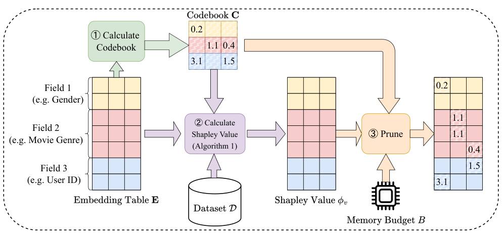

On-device Content-based Recommendation with Single-shot Embedding Pruning: A Cooperative Game Perspective (基于合作博弈视角的单次嵌入剪枝端侧内容推荐)
- 会议/期刊: ACM Web Conference 2025 (WWW '25)
- 作者与机构: Hung Vinh Tran, Tong Chen, Guanhua Ye, Quoc Viet Hung Nguyen, Kai Zheng, Hongzhi Yin (The University of Queensland / BUPT / Griffith / UESTC)
- 推荐链路定位: 精排 (CTR 预估模型压缩与端侧部署)
- 研究方向: 去偏公平与工业架构 / CTR 预估与特征交叉
- 论文原文: https://arxiv.org/abs/2411.13052v2
- 开源代码: https://github.com/chenxing1999/shaver
TL;DR (1分钟核心速览)
针对端侧内容推荐中嵌入表存储瓶颈、且现有剪枝方法需为每个目标预算重复重训的痛点，本文提出 Shaver：将嵌入参数视为合作博弈"玩家"，用 Shapley 值量化其对任意参数子集的期望贡献，实现单次前向即可剪枝到任意预算；并通过"对应玩家"定理把复杂度从 \(O(nd|\mathcal{D}|)\)降至\(O(md|\mathcal{D}|)\)（\(m\ll n\)），再以场感知码本闭式解替代零填充。在 Criteo/Avazu/KDD 三数据集、DCN-Mix 骨干下，95% 稀疏率时 KDD AUC 达 0.7836，超越需重训的 TTRec (0.7815) 与 OptEmb (0.7826)。
Background & Motivation (背景与核心矛盾)
- 主流范式: 内容推荐依赖海量稀疏类别特征，嵌入表成为存储瓶颈（Meta 报告 12T 参数、96TB 内存）；现有压缩分四类——组合嵌入 (QR/TTRec)、量化 (PTQ)、NAS (OptEmb)、剪枝 (PEP/CERP)。
- 前人局限: ① PEP、OptEmb、CERP 等需为每个目标稀疏率重新训练/重训，联邦学习与流式场景下设备异构、电量波动导致预算频繁变化，重复训练不可承受；② 现有单次剪枝 (MagPrune/Taylor) 以"对全参数集的贡献"排序，但剪枝后参数实际只与子集共存，归因目标错位；③ 零填充切断点积/逐元素乘的特征交互，信息损失严重。
- 核心洞察 (Key Insight): 剪枝真正该问的是"参数加入任意子集团队时的期望贡献"，这正是 Shapley 值的定义；且同一列上被激活特征的参数在局部价值函数下与场级玩家等价。
- 本文切入点: 合作博弈 + 场级对应玩家定理 + 闭式码本，三者组合实现"一次归因、任意预算、免重训"。
Method (核心方法设计)
1. 整体框架 (Overall Architecture)
Shaver 分三步离线完成：① 在训练+验证集上按 Algorithm 1 估计每个嵌入参数的 Shapley 值 \(\phi_v(i,c)\)；② 由各场特征频率加权均值闭式求解场感知码本\(\mathbf{C}^*\)；③ 部署时对任意预算\(B\)，将归因分最低的\(B\)个参数替换为码本占位值，得到稀疏表\(\mathbf{E}_{Q,\mathbf{C}}\) 直接推理，全程无梯度回传、无重训。
flowchart TD
A["训练好的 CTR 模型 + 数据集 D"] --> B["场级局部价值 u_loc 采样估计"]
B --> C["对应玩家定理: φ_v(i,c)=φ_u(j,c)"]
C --> D["全参数 Shapley 值排序"]
A --> E["频率加权闭式求解码本 C*"]
D --> F["按预算 B 剪枝 + 码本填充"]
E --> F
F --> G["端侧稀疏表推理"]
2. 关键设计拆解 (Key Designs)
- 场级对应玩家定理（复杂度从 \(nd\)降到\(md\)）：直接 Monte Carlo 需枚举\(2^{nd}\)子集、每置换\(nd|\mathcal{D}|\)次前向，不可行。作者定义场级局部价值\(u_{loc}(\mathcal{S}'|\mathbf{x},y)=L(f_{\text{w/o-}\mathcal{S}'}(\mathbf{x}),y)-L(f(\mathbf{x}),y)\)，其中玩家\((j,c)\)是场\(j\)嵌入表第\(c\)列的整组参数。定理 4.3：若\((i,c)\)与\((j,c)\)对应（同列且\(\mathbf{x}[i]=1\)），则\(\phi_v^{\mathbf{x},y}(i,c)=\phi_u^{\mathbf{x},y}(j,c)\)。直觉是：单样本下同列参数对损失的边际贡献完全一致，故只需对\(m\)个场而非\(n\)个特征做置换采样，KDD 上\(m=11\)vs\(n\approx6\times10^6\)，复杂度降至\(O(md|\mathcal{D}|)\)，且由中心极限定理估计无偏、方差\(O(1/|\mathcal{D}|)\)。
- 场感知码本替代零填充：零填充使被剪参数与所有特征交互归零，破坏点积/逐元素乘结构。作者引入 \(\mathbf{C}\in\mathbb{R}^{m\times d}\)，剪枝参数按所属场填\(\mathbf{C}[j,c]\)，并最小化期望重构误差\(\mathbf{C}^*=\min_{\mathbf{C}}\mathbb{E}_{\mathbf{x}\sim\mathcal{D},|Q|=B}\|\mathbf{E}^\top\mathbf{x}-\mathbf{E}_{Q,\mathbf{C}}^\top\mathbf{x}\|_2^2\)，解得频率加权闭式解\(\mathbf{C}^*[j,:]=\sum_{i\in\mathcal{F}_j}p_i\mathbf{V}_j[i,:]/\sum_{i\in\mathcal{F}_j}p_i\)。仅\(md\) 个元素，存储开销可忽略，且高频特征已被码本"代表"，预算可让渡给低频特征。
- 训练目标、负采样与推理效率：Shaver 不引入新训练损失，直接复用原模型 log loss \(L=-y\ln\hat{y}-(1-y)\ln(1-\hat{y})\)；归因阶段仅需前向（无负采样、无梯度），码本训练期冻结。最坏情况（Criteo 全量）约 2.5 小时完成归因，而任一基线单次重训即超 1 小时（不含调参），且 Shaver 一次归因覆盖所有预算。
Experimental Setup & Evaluation Protocol (实验设置与评估协议)
- 数据集与预处理（低频特征替换为 OOV token）：
| 数据集 | #Instances | #Features | #Fields | 过滤/说明 |
|---|---|---|---|---|
| Criteo | 45,840,617 | 1,086,810 | 39 | 数值特征 \(\lceil\log_2 x\rceil\) 离散化，min_count=10 |
| Avazu | 40,428,967 | 4,428,511 | 22 | 移除 id 字段，min_count=2 |
| KDD | 149,639,105 | 6,019,761 | 11 | min_count=10 |
- 数据划分与防穿越: 随机
8:1:1比例划分（train/valid/test）；归因分数用 train+valid 计算，test 仅评估。 - 排名评测协议: CTR 场景采用
LogLoss与AUC点估计（非 Full-Ranking 列表指标），AUC 差异 0.001 视为显著；稀疏率 \(t=|Q|/nd\)。 - 对比基线与超参设置: 非单次组 QR/TTRec/PEP/OptEmb/CERP（\(t\in\{50\%,80\%,95\%\}\)），单次组 MagPrune/PTQ/Taylor（\(t\in\{0.2,\dots,0.999\}\)）；骨干 DeepFM 与 DCN-Mix，嵌入维度\(d=16\)，严格沿用 [55] 的数据划分与调参范围。
Key Experimental Results (实验关键数据)
1. 主实验对比 (Main Results)
DCN-Mix 骨干，\(t=95\%\)（最严苛预算）：
| 数据集 | 方法 | Single-shot | AUC↑ | LogLoss↓ | #Params |
|---|---|---|---|---|---|
| Criteo | PEP | ✗ | 0.8114 | 0.4406 | 831K |
| Criteo | TTRec | ✗ | 0.8106 | 0.4414 | 870K |
| Criteo | Shaver-Codebook | ✓ | 0.8112 | 0.4410 | 870K |
| Avazu | PEP | ✗ | 0.7564 | 0.3938 | 3.52M |
| Avazu | OptEmb | ✗ | 0.7683 | 0.3895 | 3.43M |
| Avazu | Shaver-Zero | ✓ | 0.7690 | 0.3865 | 3.54M |
| KDD | TTRec | ✗ | 0.7815 | 0.1559 | 4.82M |
| KDD | OptEmb | ✗ | 0.7826 | 0.1591 | 4.80M |
| KDD | Shaver-Codebook | ✓ | 0.7836 | 0.1563 | 4.82M |
\(t=80\%\)时 Shaver-Codebook 在 KDD 达 0.7870，与\(t=50\%\) 持平，显著优于 TTRec (0.7843) 与 OptEmb (0.7818)。
2. 消融实验 (Ablation Study)
KDD 数据集，DCN-Mix 骨干，AUC：
| 变体 | \(t=50\%\) | \(t=80\%\) | \(t=95\%\) |
|---|---|---|---|
| Shaver-Zero | 0.7858 | 0.7826 | 0.7699 |
| Shaver-Codebook | 0.7870 | 0.7870 | 0.7836 |
| Shaver-Zero† (微调) | 0.7858 | 0.7826 | 0.7775 |
| Shaver-Codebook† (微调) | 0.7754 | 0.7806 | 0.7836 |
3. 关键实验发现 (Key Findings)
- 码本收益随稀疏率单调放大：KDD 上 \(t=50\%\)时码本仅 +0.0012，\(t=95\%\) 时 +0.0137（0.7699→0.7836），说明零填充的信息损失在高稀疏下才被放大，码本正是针对该区间的补偿机制。
- 单次剪枝可媲美甚至超越重训方法：\(t=95\%\) 时 Shaver-Codebook 在 KDD 超 TTRec +0.0021、超 OptEmb +0.0010，而后者每个预算都需完整重训，验证 Shapley 归因的排序质量足以替代迭代搜索。
- 微调并非总有益、且存在数据泄漏风险：KDD 上 Shaver-Codebook† 在 \(t=50\%\)反降至 0.7754（因归因用了验证集，微调时泄漏），而 Shaver-Zero† 在\(t=95\%\) 提升 +0.0076；说明码本已吸收大部分可恢复信息，微调收益被前置归因"吃掉"。
Highlights & Limitations (亮点、对比与审稿批判)
- 与代表作对比 (vs. Prior Work): 相比 PEP/CERP 的"训练中软阈值 + 重训"两阶段范式，Shaver 把预算解耦为推理期后处理；相比 SSEDS 强制同场等维约束，Shaver 允许逐参数非均匀分配；相比 MagPrune/Taylor 的"全集团队"归因，Shapley 值刻画的是"任意子集团队"的期望贡献，与剪枝语境严格对齐。
- 可迁移亮点: ① "对应玩家"降维思路可迁移到任何按场分组、组内单样本仅一个特征激活的稀疏嵌入剪枝（如 DLRM 类模型）；② 频率加权闭式码本可作为通用"剪枝后占位值学习"插件，替换任意剪枝框架中的零填充。
- 审稿级局限批判: ① 归因使用验证集导致微调时数据泄漏，KDD 上出现性能倒挂，评估协议存在瑕疵；② 仅验证 DeepFM/DCN-Mix 两类骨干与 CTR 点估计指标，未涉及列表级排序或生成式推荐；③ 码本在 Avazu+DeepFM 上反被零填充超越（作者自认原因不明），说明码本收益对数据分布敏感，缺乏理论刻画。
Rating (四维评分)
- 方法创新性 (Novelty): ⭐⭐⭐⭐ （合作博弈视角切入剪枝归因错位问题，"对应玩家"定理给出严格等价性与复杂度证明，理论支撑扎实）
- 评估协议与实验扎实度 (Protocol & Experiments): ⭐⭐⭐⭐ （三数据集、双骨干、9 档稀疏率、单次/非单次两组基线齐全，但归因用验证集引入泄漏、缺显著性检验）
- 写作与数学规范度 (Clarity & Rigor): ⭐⭐⭐⭐ （价值函数、定理与闭式解推导完整，附录含合成数据验证与收敛分析；部分符号 \(v/u\) 混用需对照阅读）
- 工业落地与复现价值 (Industrial & Practical Value): ⭐⭐⭐⭐⭐ （代码开源，Raspberry Pi/Android 实测推理 0.02–0.04s、内存随稀疏率线性下降，一次归因覆盖全预算，端侧部署价值极高）